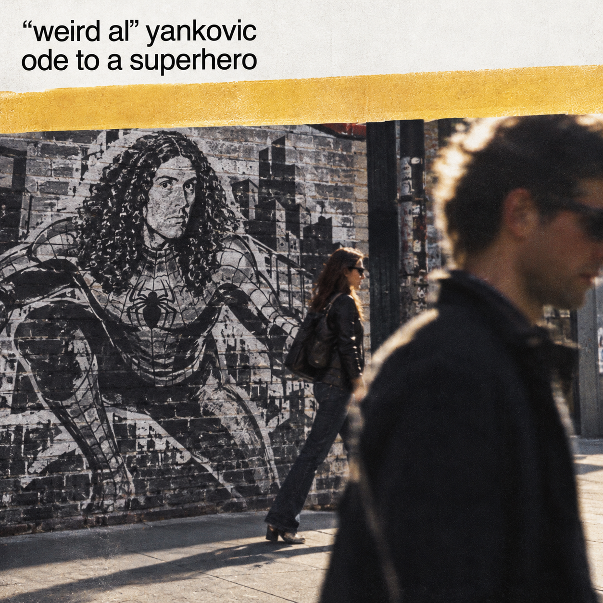

Imagem gerada por inteligência artificial
“Ode to a Superhero” é uma paródia da música “Piano Man”, de Billy Joel, e reconta a trama do filme Homem-Aranha, lançado em 2002. A canção resume os principais acontecimentos da produção e apresenta seus personagens, incluindo Peter Parker, cuja identidade secreta é o Homem-Aranha; Mary Jane Watson, também conhecida como MJ, por quem Peter é apaixonado; Harry Osborn, amigo de Peter que também ama Mary Jane; e o tio Ben, tio de Peter. Outro personagem importante é Norman Osborn, pai de Harry, que se transforma no Duende Verde.
Entre os acontecimentos retratados na música estão o momento em que Peter é picado por uma aranha durante uma visita escolar a um laboratório de ciências e sua transformação no Homem-Aranha, adquirindo habilidades como escalar paredes e lançar teias pelos braços. A canção também aborda a cena em que Mary Jane retira a máscara de Peter para beijá-lo enquanto ele está pendurado de cabeça para baixo na chuva, além do conselho do tio Ben: “Com grandes poderes vêm grandes responsabilidades”.
Outros eventos incluem a transformação de Norman Osborn no Duende Verde e a consequente perda de sua sanidade, o uso de suas armas características, como o planador e as bombas de abóbora, e sua morte. Após o ocorrido, Harry acredita que o Homem-Aranha foi responsável pela morte de seu pai. Por fim, a música relembra o momento em que Peter rejeita Mary Jane durante o funeral de Norman Osborn.
Poor Peter Parker was pitiful
Couldn't have been any shyer
Mary Jane still wouldn't notice him
Even if his hair was on fire
But then one day he went to that science lab
That mutated spider came down
Oh, and now Peter crawls over everyone's walls
And he's swingin' all over town
La li la, li de da
La la, li le la da dom
Sling us a web, you're the Spider-Man
Sling us a web tonight
'Cause we're all in the mood for a hero now
And there's evil-doers to fight
Now Harry the rich kid's a friend of his
Who horns in on Mary Jane
But to his great surprise it seems she prefers guys
Who can kiss upside-down in the rain
"With great power comes great responsibility"
That's the catch phrase of old Uncle Ben
If you missed it, don't worry, they'll say the line
Again and again and again
Oh, la la la, di de da
La la, di di da da dom
Now Norman's a billionaire scientist
Who never had time for his son
But then something went screwy and before you knew he
Was trying to kill everyone
And he's ridin' around on that glider thing
And he's throwin' that weird pumpkin bomb
Yes, he's wearin' that dumb Power Rangers mask
But he's scarier without it on
Sling us a web, you're the Spider-Man
Sling us a web tonight
'Cause you're brave and you're strong and so limber now
But where'd you come up with those tights?
It's a pretty sad day at the funeral
Norman Osborn has bitten the dust
And I heard Harry's said he wants Spider-Man dead
Aw, but his buddy Pete he can trust
Oh, and M.J. is all hot for Peter now
Aw, but Peter, he just shuts her down
Mary Jane, don't you cry, you can give it a try
Again when the sequel comes 'round
Oh, la la la, di de da
La la, di di da da dom
Sling us a web, you're the Spider-Man
Sling us a web tonight
'Cause we all sure could use us a hero now
And we think that you'll do all right